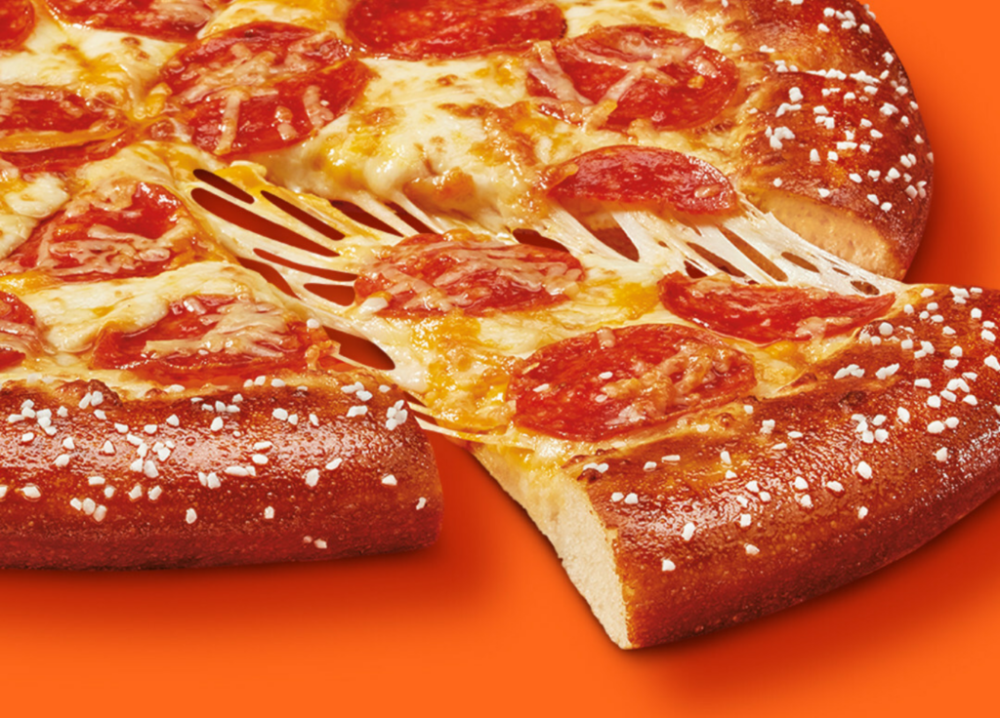

Odin Recipes / Pretzel Crust Pizza
Pretzel Crust Pizza

Description
A pretzel dough may not be your first thought when you want to make a pizza, but it's the perfect way to try something new. And if you are both a fan of soft pretzels and pizza, you’ve come to the right place.
Just like any pizza, this one can really be made with whatever sauce and toppings you want. While this recipe uses a cheese sauce as the base, and more mozzarella on top for good measure, a tomato sauce is always an option. If a little heat sounds nice, add chopped pickled jalapeno chiles to the cheese sauce.
Dough for soft pretzels differs from traditional pizza dough in one main way: Pretzel dough gets a baking soda, lye, or malt syrup wash to create the signature “pretzel flavor” and the crunchy brown crust. A proper pretzel will be made with a traditional lye bath, which gives the snack its deep brown color and signature flavor. Considering lye can be dangerous if handled improperly, a baking soda bath, which this recipe uses, can create a very similar result.
Ingredients
Pizza
- 1 ¼ cups warm water (about 110 degrees F (43 degrees C))
- 1 ½ tablespoons granulated sugar
- 1 (1/4-ounce) envelope active dry yeast
- 3 ½ cups bread flour
- 1 teaspoon kosher salt
- neutral cooking oil, for greasing bowl
- cooking spray
- 1 tablespoon baking soda
- 2 tablespoons hot water
- 2 cups shredded low-moisture, part-skim mozzarella cheese
- 30 pepperoni slices (such as Hormel)
- 1 tablespoon unsalted butter, melted
- pretzel salt
Cheese Sauce
- 1/3 cup whole milk
- 8 ounces processed cheese (such as Velveeta), cubed
- 1 tablespoon unsalted butter
- ½ teaspoon onion powder
- ½ teaspoon paprika
- ½ teaspoon garlic powder
- 1/4 teaspoon kosher saltli
Steps
- Gather all ingredients.
- Prepare the pizza: Place warm water, sugar, and yeast in the bowl of a stand mixer fitted with a dough hook. Whisk until just combined, and let stand until foamy, about 5 minutes.
- Add flour and salt; mix on low speed until just combined, about 20 seconds. Increase speed to medium, and knead until dough is smooth
and elastic, about 5 minutes.
- Shape dough into a ball, and transfer to a large greased bowl, rotating dough to coat all sides in oil. Cover with plastic wrap or a clean damp towel; let rest in a warm area until doubled in size, 25 to 30 minutes.
- Preheat the oven to 425 degrees F (230 degrees C) with a pizza stone or overturned large rimmed baking sheet on the center rack. Grease a large 15-inch pizza pan with cooking spray. Punch down dough, and transfer to the prepared pizza pan. Using clean hands, press dough to the outer edge of the pan (dough should be 15 inches in diameter). Fold 1 to 1 1/2-inches of dough’s outer edge over itself to create adefined crust (dough should be 13 inches in diameter to the outer edge).
- Combine baking soda and hot water in a small bowl. Using a pastry brush, brush the top and outer edges of crust; discard any remaining baking soda mixture.
- Bake crust on pizza stone in preheated oven until crust is golden brown, about 8 minutes.
- Meanwhile prepare the cheese sauce: Bring milk to a simmer in a small saucepan over medium. Reduce heat to low; add processed cheese, in batches, whisking constantly until melted, about 5 minutes. Whisk in butter, onion powder, paprika, garlic powder, and salt until smooth. Set aside until ready to use.
- Spread cheese sauce evenly over par-baked crust. Sprinkle with an even layer of mozzarella cheese, and top evenly with pepperoni slices. Brush outer crust with melted butter, and sprinkle evenly with pretzel salt.
- Bake in the preheated oven at 425 degrees F (230 degrees C) until mozzarella is slightly browned and melted and crust is cooked through, about 8 minutes. Remove from oven, and let cool on pizza pan for 5 minutes. Slice and serve.